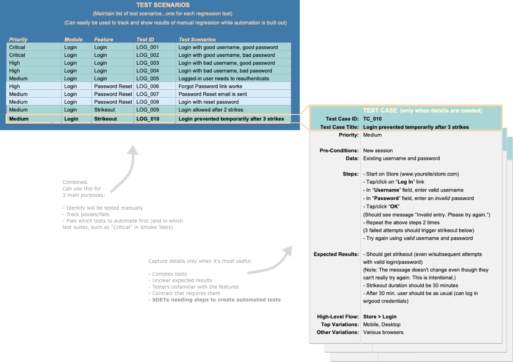

You've probably heard that Agile methodologies (such as Scrum) are more lightweight than the traditional software development lifecycle (commonly referred to as "waterfall"). Agile requires less documentation, so there's less time spent on writing, reading, and maintaining that documentation. And for companies/projects where Agile is a little too agile, there are alternative versions of it, such as SAFe. Also many companies use more of a hybrid approach.
Why doesn't everyone do full-on Agile? Getting to Agile requires commitment and company buy-in. It takes a mindshift, some training, trust, and lots of course-correction (which is a good thing). It's also incredibly easy to gradually slip back into waterfall habits. Also, even if a team is doing full-on Agile, there could be some projects that require additional documents.
For those trying to decide on what QA processes to use, it's helpful to be open-minded and start
small...focusing on what's actually most useful for your teams. With Agile, especially as trust is built up,
there's less reliance on a lot of documentation, partly because of the added focus on informal communication.
What should your team do? Like always, it depends on your specific situation. Here are some things to consider:
Usefulness: There will never be enough time to document how to test every single aspect of your applications, so how do you decide what falls off the plate?
Always focus on what is most useful. Unnecessary documentation is not only expensive to create and maintain, but it takes extra time for others to sift through to find what they actually need.
Thinning it down saves time for everyone, which frees time to do more testing or improve test capabilities with
automation.
Reusability: Only use documentation that can do double and triple duty. It's not being lazy...it
allows for more time to do the actual testing. It can also free up some time to build your team's test capabilities for future projects. Be open to different ways
documentation can be presented. For example, test scenarios can be shown in a matrix with columns for tracking
what tests have passed/failed or are blocked in which environments. It can be updated on-the-fly and can be an
efficient way to track who is testing what. That matrix can serve as an informal test plan at the beginning of a
sprint and can be modified on-the-fly as more test scenarios are added.
Accessibility: Try to keep documentation available where people can see the results for themselves.
For example, if stakeholders can see a chart that shows only half the tests have been executed, they don't
necessarily need a separate status report.
Creating a lot of detailed test cases can be expensive and time-consuming to maintain. Some companies create both Test Scenarios AND detailed Test Cases. To keep things lightweight, these can actually be combined and reduced. The first diagram below shows the traditional approach. It's much more documentation than recommended for Agile.
To keep things useful and more maintainable, it's often helpful to use a lighter approach instead. You can use the test case titles as the list of Test Scenarios AND avoid entering detailed steps for every test case. The details are great (I'm all about details). But there's always an opportunity cost to maintaining overly-detailed test cases if they aren't actually getting used. They key is to put that time where it's needed and figure out where it's not actually useful.
Here are some common documents used for different development methodologies. It's usually best to keep things simple and use only the documents that are truly needed (some of these documents are geared more for large projects or because of contractual requirements).
The ones that are highlighted green/blue are the documents that are generally done (and are done by the QA team as opposed to the Product Owner/Product Manager, etc.).
| Agile | Waterfall | Document | Description |
|---|---|---|---|
| Requirements Documents | |||
| X | Business Requirements
Functional Requirements Technical Requirements (usually prepared by the Product Manager, Business Analyst, or System Architect) |
Done for large projects (and small projects in many companies). Provides overall plan and details on what all must be included with the product release. A project may need only one kind of requirements doc or various kinds. | |
| X | Epics and User Stories
(usually prepared by the Product Manager) |
With Agile, many features are handled with User Stories (and Epics) instead of Requirements documents. And for projects where both are used, the detail is contained in the epics and user stories, making them more dynamic and accessible to development teams. | |
| Test Documents | |||
| X
(optional) |
Test Strategy
(usually prepared by the Product Manager) |
(optional) Similar to Test Plan, but high-level, prepared early, and static. | |
| X
(optional) |
RTM (Requirements Traceability Matrix)
(usually prepared by a Business Analyst, PM, or Lead QA) |
(optional) For large projects or contracts. These are used to map the test cases to the requirements. | |
| (usually not done for sprints, but could be needed for large projects) | X | Test Plan
(usually prepared by the QA Lead) |
Lists objectives and defines the scope, schedule, resources, types of testing, processes, etc. |
| X
(not required, but useful if scenarios don't already exist for a new feature) |
X | Test Scenarios
(prepared by QA or QA Lead) |
To keep it simple (and get the most bang for your buck), you can just use the test case titles as the scenarios. Having a list of test cases/scenarios is useful for quickly communicating what all will be tested. It's also handy for tracking the progress, especially if more than one person is testing. However, you'll still want to give the tester the freedom to do exploratory testing (which is often where bugs are found). |
| (usually not done for sprints, but could be if assisting automation with steps) | X | Detailed Test Cases
(prepared by QA) |
Includes test setup, steps, expected results, etc. With Agile, these aren't really necessary. However, they're helpful when preparing for test automation and for features where the steps or expected results aren't obvious. |
| X | X | Bug Reports
(prepared by QA) |
Generally captured in issue-tracking tools like Jira, Bugzilla, etc. |
| X | X | Test Data
(usually prepared by QA, QA Lead, or Devs) |
Data gathered or created for testing. Oftentimes, this data can be throwaway, but sometimes it's useful to keep and track (and possibly reuse in the future). |
| (optional) | X
(can be automatically done with some tools) |
Test Metrics
(usually prepared by the QA Lead or pulled from test tools) |
Two basic kinds:
Metrics that show the progress of the project (useful) Metrics that try to measure how well a team or person is doing their job (often not useful) They can be pulled from existing systems, such as Jira, or they can created as an extra artifact. When deciding on metrics, it's important to remember that it can cause efforts to get skewed and even adversely affect team cooperation. |
| (automatically done as part of the team's sprint board) | X
(can be automatically done with some tools) |
Test Status Report
(usually prepared by QA or QA Lead) |
(Formal or informal) Regular updates to communicate progress and risk. With waterfall, this can be done with an extra report (for % of coverage done) and a Jira dashboard (for bug resolution). In Agile, this is done with the team's burndown and can be shown with a Jira dashboard if needed. |
| (usually not needed, but helpful for some sprints/projects) | X
(optional) |
Test Summary / Closure Report
(usually prepared by QA or QA Lead) |
With waterfall, this is information to show final test results, outstanding defects, etc. With Agile, this is usually not necessary since the work is self-reporting. However, in some cases where there is some carryover or outstanding bugs, it can be useful to map which tickets will be used for the remaining work/bugs. |
| Other Documents | |||
| X
(optional) |
X
(optional) |
Release Notes
(usually prepared by Tech Writer, PM, or QA) |
Intended for end user (lists features, fixes, known issues, etc.). For releases of internal software, this can be done informally with an email to those affected. Training can also be offered. |
Try Out Testing (with some light-weight bug reports)
Dummy Login Page (which I use for my own purposes to "log in" to the "Try Out Testing" page)